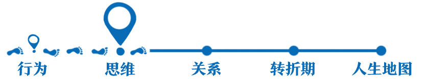
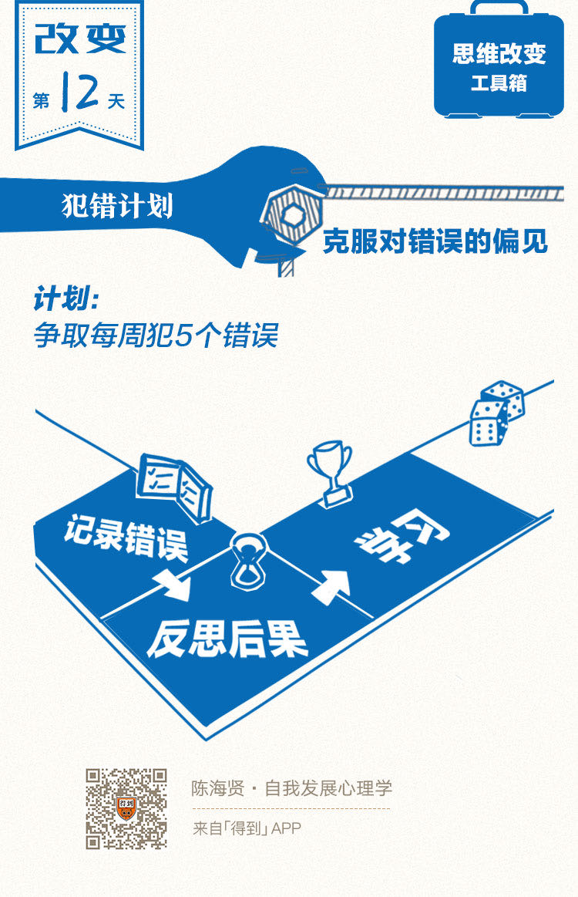

欢迎来到《自我发展心理学》。
你好，我是陈海贤。
上节课我们讲到成长型思维和僵固型思维的核心区别，我来帮你回忆一下：
成长型思维认为人的能力是不断成长的，因此会把注意的重点放到通过努力来获得能力成长上。
而僵固型思维认为人的能力是固定不变的，因此会把注意力放到证明自己聪明和维护自己的聪明形象上。
听完上节课，也许你会有一个疑问：我们怎么才能从僵固型思维转变为成长型思维呢？
今天，我们就来聊聊这个问题：如何克服僵固型思维？
改变对错误的认知
我想先请你思考一下，人的能力究竟是怎么成长的。设想一下，如果你每天在一个熟悉的地方，做你已经会的工作，虽然工作也很辛苦，你的能力会成长吗？可能不会。
能力的成长，来自于挑战。
如果你所在的环境提了一个超出你能力范围的问题，你必须努力去解答这个问题。如果你答错了，环境就会以某种方式反馈给你。
最终，你对问题有了更深的了解，你的能力也在回答问题的过程中得到了提升。这就是能力成长的过程。
从这个角度，“聪明不聪明”，“能力强不强”所形容的不应该是孤立的个体，而是个体和环境的互动方式能否促进能力的成长。
而僵固型思维却因为要固守“聪明”的形象，不愿意去面对挑战，从而失去了让自己真正变聪明的机会。
适应是一种非常强大的学习机制，我们面对难题和挑战的过程，其实也是我们的大脑通过适应环境学习的过程。这些难题和挑战会让我们的大脑变得更加灵活和精细化，而僵固型思维的人因为回避挑战而失去了这种机会。
既然僵固型思维会阻碍我们成长，那么我们到底要怎么克服僵固型思维呢？我认为核心就是，改变对错误的认知。
我们的文化总是在教育我们要尽力避免犯错误。从幼儿园开始，我们的很多教育都在教人怎么识别错误以及怎么防止错误。
我听过一个说法，说父母对孩子说的话里，90%都是教孩子“不要做什么”。
最开始我觉得这种说法很夸张，后来我用一天时间留意和分析了一下自己跟孩子的对话，结果还真是这样，可能还不止90%。
我们受的教育是这样，所以我们对错误也有了特别多的负面评价。我们很难把错误当做是一种反馈，一种难得的学习机会，而很容易把错误当做是一种失败。
可事实上，当我们在解答环境提出的问题时，会犯很多的错误。试错就是一种基本的学习机制。这跟你的能力无关，而跟事物发展的进程有关。
可是有些人就不这么想，他们会本能地认为：我犯了错，那一定是我不够聪明，没把事情做对。他们会把错误等同于失败。
当你把错误当失败的时候，你其实认同了这样的假设：事物的发展不是曲折向前的，而是直线式的，最终有一个终点——成功或者失败。而错误就是那个终点。这显然并不是事物发展的真实逻辑。
错误和失败还有一个不同，错误说的是事情的结果，而失败就引向了个人评价。
当我们把错误当做一种“证明自己不行”的失败时，我们就会回避错误，从而让自我发展陷入停滞的状态。
管理错误的三种方法
现在我们知道了克服僵固型思维的核心，是改变对错误的认识，但是这件事说起来容易做起来难。我们要怎样转变对错误的看法呢？
我总结了三种方法。
第一种方法，就是把错误看作是学习的机会。
「得到」里很多老师都提过《原则》这本书。这本书里，讲到了桥水公司对错误的态度，就是公司不会惩罚员工犯的错误，而是鼓励员工讨论所犯的错误。
为此，公司甚至还专门成立了一个错误档案，把所有人所犯的错误记录下来，供公司其他员工来学习。
在提到为什么要对错误保持这种开放的态度时，这本书的作者说：
我在很多我钦佩的人身上，看到了这种对错误的开放态度。
有一次在一个浙江大学心理系校友会的活动中，阿里云的总裁王坚老师给我们做了一个演讲。
他毫不讳言地讲起自己最初在阿里云时，所犯的各种错误。谈到这些错误时，他说：
正是这种对错误的开放态度，支持着他从一个大学老师不断转型，最终把阿里云这件事做成了。
转变对错误看法的第二个方法，是突破自己不会犯错的形象。
僵固型思维的特点是担心犯错。担心犯错，其实就是在维护自己不会犯错的形象。所以如果我的来访者因为僵固型思维来咨询，我一开始就会劝他们放弃不会犯错的形象。

我有一个来访者，刚到一个公司上班，每天加班到很晚，觉得压力很大。
我问他：“是你们所有人都这样，还是你自己这样呢？”
他说：“好像也不是所有的人都这样，就是我自己这样。因为我有很多东西不知道，需要去自己摸索，就会浪费很多时间。”
我说：“那你为什么不去跟别人请教呢？”
他沉默了一会说：“如果我一开始犯了很多错误，我就担心别人知道我连这么简单的东西也不会，怕他们笑话我。”
他就是为了维护什么都会的聪明形象，而把自己封闭起来，结果给了自己很大的压力。
按理说，一个刚到公司的新人是不需要这种“我什么都会”的自我形象的。可是有时候很奇怪，人越是焦虑，就越不愿意跟别人请教，结果就变得越来越封闭。
这种错误不仅刚进公司的员工会犯，公司的高层也会犯。
我有一个来访者，是投资人，自己带一个团队，业绩做得非常好，团队的人也都很信任他。
可是前段时间，他因为自己的判断，错过了一个投资机会。如果抓住这个投资机会的话，会给团队带来巨大的利益。这让他有很大的压力。
我就鼓励他跟团队聊这件事，反正大家也都知道嘛。第二次回来，我问他怎么样。
他说，他很郑重地跟大家说：“对不起，我也会犯错，让大家失望了。”
谁知道大家很轻松地说，“没关系，我们本来就知道你会犯错啊，也没指望你什么都对。”
这样，不用维护一个不会犯错的投资人形象，他一下子觉得自己轻松了很多。他觉得自己的判断更坚决，也更敢做决策了。
刚刚我讲了突破僵固型思维的两种方法，一个是把错误当做学习的机会，另一个是突破自己不会犯错的形象。
现在我想来讲第三个方法，那就是制定犯错计划。
曾有一个来访者问我：“我总是为说错话、做错事懊恼不已，影响工作和生活，该怎么办？”
对他来说，错误意味着失败和对自己的否定。他很少从反馈的角度理解错误。所以当他听到，我建议他制定一个“犯错误计划”时，他吃了一惊。
我说：“如果要克服对错误的恐惧，你就必须犯错误。你要争取每周犯5个错误，记录下这些错误，反思这些错误的后果是否如你所想的那么严重，并思考你从这些错误中学习到了什么。多做多错，如果你没能在这一周之内犯足5个错误，就证明你做得不够多。”
我希望他能通过这个作业了解错误作为反馈的另一面。我也希望这样的作业能降低他对犯错的焦虑。假如他真的犯错了，他至少可以跟自己说：“我这是在完成陈老师的作业嘛。”
我觉得这个思路特别好。为自己制定犯错计划，会消解错误的消极价值。如果你也为犯错烦恼，为了克服对错误的偏见，你也可以尝试一下这个犯错计划。
听到这里，也许你会想：你说的听起来有些道理，可是在现实的生活中，错误的代价是非常重大的，我们怎么可能不害怕犯错呢？
对于这个问题，我有两个思考想分享给你。
第一，如果你的错误会导致你一无所有、家破人亡，那你就要小心了。
这已经不是犯错，而是赌博了。可是，如果你的试错成本是你可承受的，那你就需要在生活中，给试错留下空间。
那什么是可承受的试错成本呢？这跟你的人生观有关了。
如果你需要的少，你能容忍的试错成本就高，你也会有更大的空间通过试错来学习。而年轻的时候，是我们试错成本最低的时候。
第二，错误是人生的一部分，有时人生会因为错误而变得更丰富。
我的这个想法是受了一本书的启发，这本书叫做《有限与无限的游戏》。这本书讲到，有两种游戏：
一种叫有限游戏。这种游戏有明确的规则，也有明确的开始和结束。而我们的任务，就是尽快结束这个游戏，并且赢得这个游戏。在这样的游戏中，错误就是意味着游戏的终止和失败。
而另一种游戏，叫无限游戏。这种游戏没有明确的胜负，游戏最重要的目标，就是让游戏继续下去。
如果我们的人生是一个无限游戏，那错误就不是游戏的终止，它是游戏的一部分。你甚至会有意识地犯一些错误，来让游戏变得有趣一些。
总结一下，这节课我们讲了如何克服僵固型思维。我们知道了克服僵固型思维的核心，是要改变对错误的认知。
而改变对错误的认知，我有三个方法：
第一，把错误看作是学习的机会；
第二，突破自己不会犯错的形象；
第三，制定犯错计划。
下节课，我们讲另一种防御型思维——应该思维。
我们下节课见。
